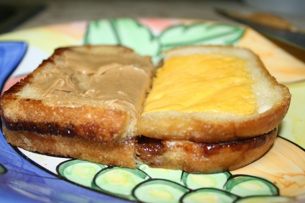

Grilled Charlie

Description
The perfect afternoon snack after a morning of bashing rats!
Ingredients
- Bread
- American Cheese
- Butter
- Peanut Butter
- Chocolate
Steps
- Pre-heat stove to medium, then add frying pan coated in butter.
- Slather one side of a slice of bread with butter, and place it butter-side down on the pan.
- Add cheese slice to the bread and let it melt.
- Flip over (cheese down), adding more butter to both the pan and bread, and flip back again (cheese up).
- Take bread off the pan.
- Repeat steps 2-5, but in place of cheese, use chocolate syrup.
- Combine the two slices of bread with the cheese on the outside and chocolate on the inside.
- Coat bread with peanut butter on the outside of the chocolate slice.